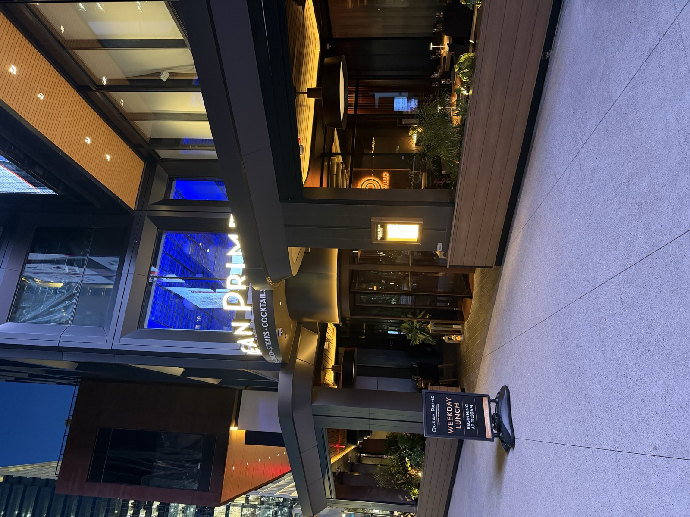
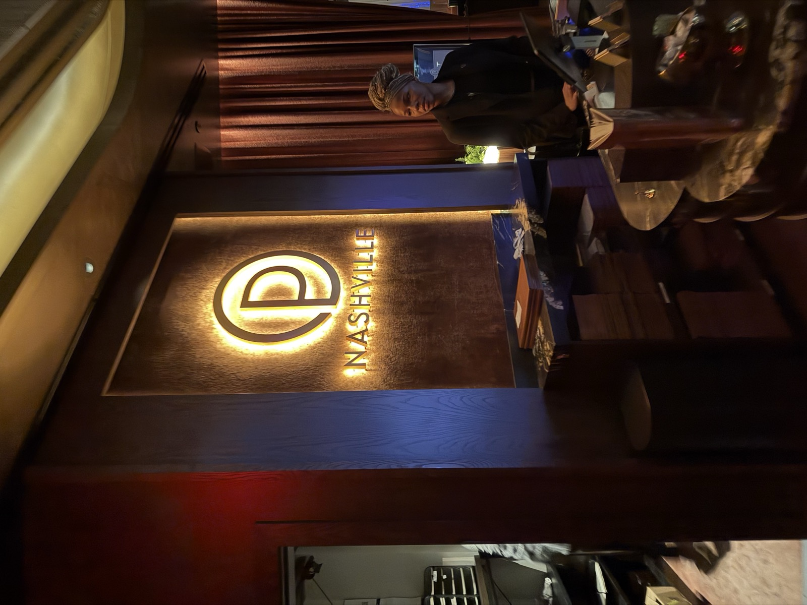
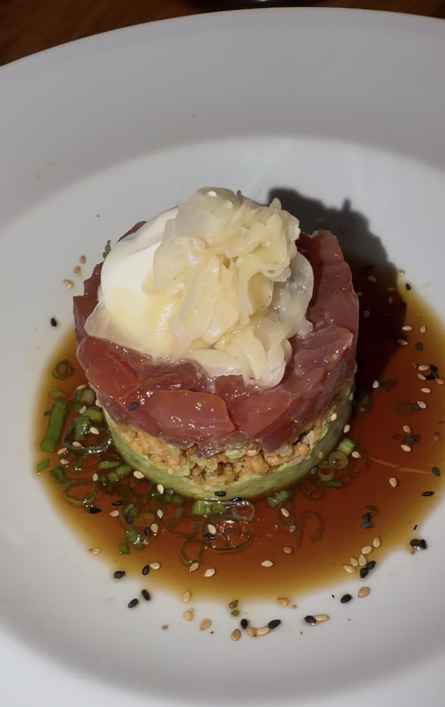
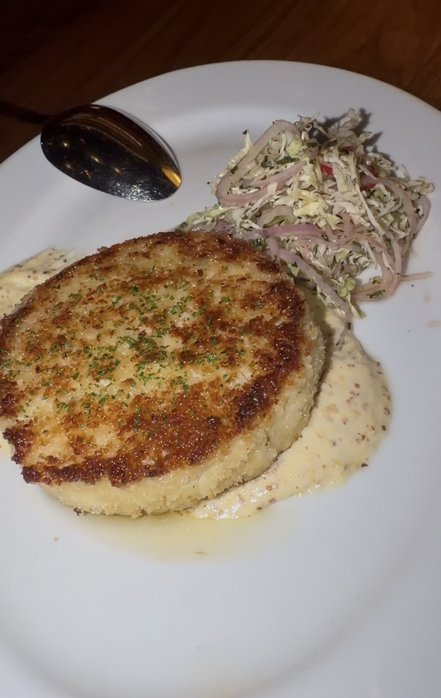
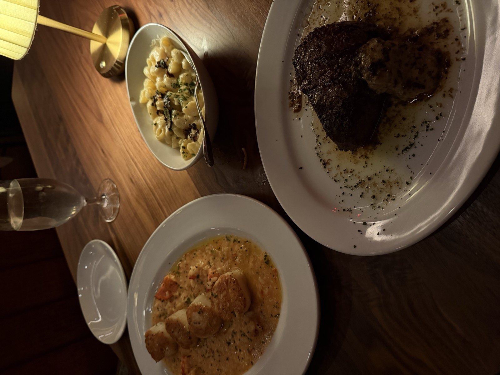

- ⭐ Sam Score: 9.3/10
- 📅 Visited: August 12, 2026
- 📍 Address: 990 Signal Crossing, Nashville, TN 37203
- 💰 Price: $$$$
- 🍽️ Cuisine: Steakhouse & Seafood
- 🚗 Parking: Paid parking
- 📞 Phone: (629) 235-7555
- 🌐 Website: ocean-prime.com/locations-menus/nashville/
❤️ Great For:
🏆 Sam's Favorite❤️ Date Night Pick🍹 Best Drinks🌅 Best Patio
My Video Review
About Ocean Prime
Ocean Prime is an upscale steakhouse and seafood restaurant near Broadway in downtown Nashville, part of a national fine-dining group, serving prime steaks, fresh seafood, and craft cocktails in a polished, modern dining room.
What I Ordered
Jumbo Lump Crab Cake, Ahi Tuna Tartare, Sea Scallops, a 10oz Filet Mignon cooked medium rare with black garlic butter, and a side of black truffle mac and cheese.
Photos





Pros & Cons
👍 Pros
- Great environment
- Great drinks
- Great area of town
👎 Cons
- Slower service, but it's meant to be that way
Related Articles
Ocean Prime appears on: